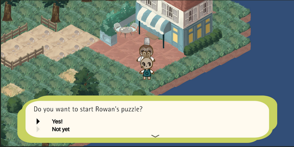

Alert Cali-S'more-nia
Jun-Aug 2024
A game about fire safety and wildfire prenvention. Inspired by California wildlife and natural landscapes.

Worked on character designs and game assets. Provided additional assistance with coding and debugging.

Sweet Sugar Tycoon
Jun 2025-Current
A game where you build your own community garden with the help of the friendly locals. All characters are inspired by pollinator species such as butterflies, bees, and bats.
[insert concept art]